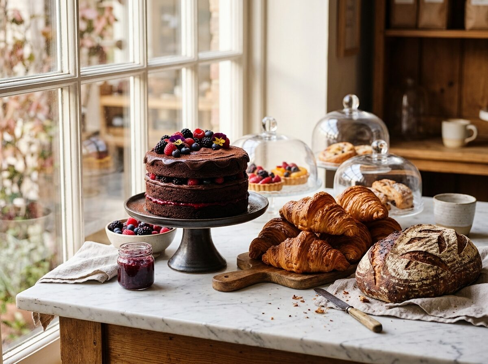
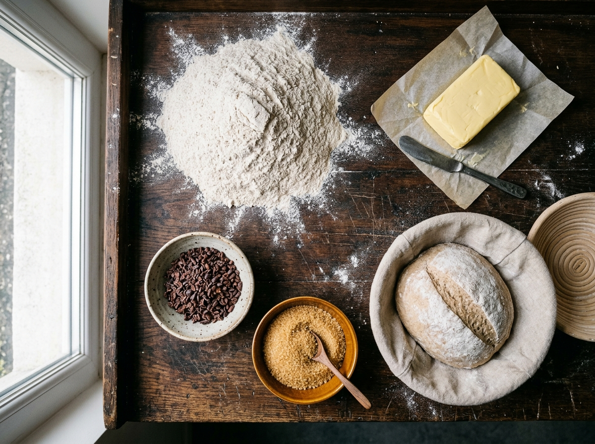
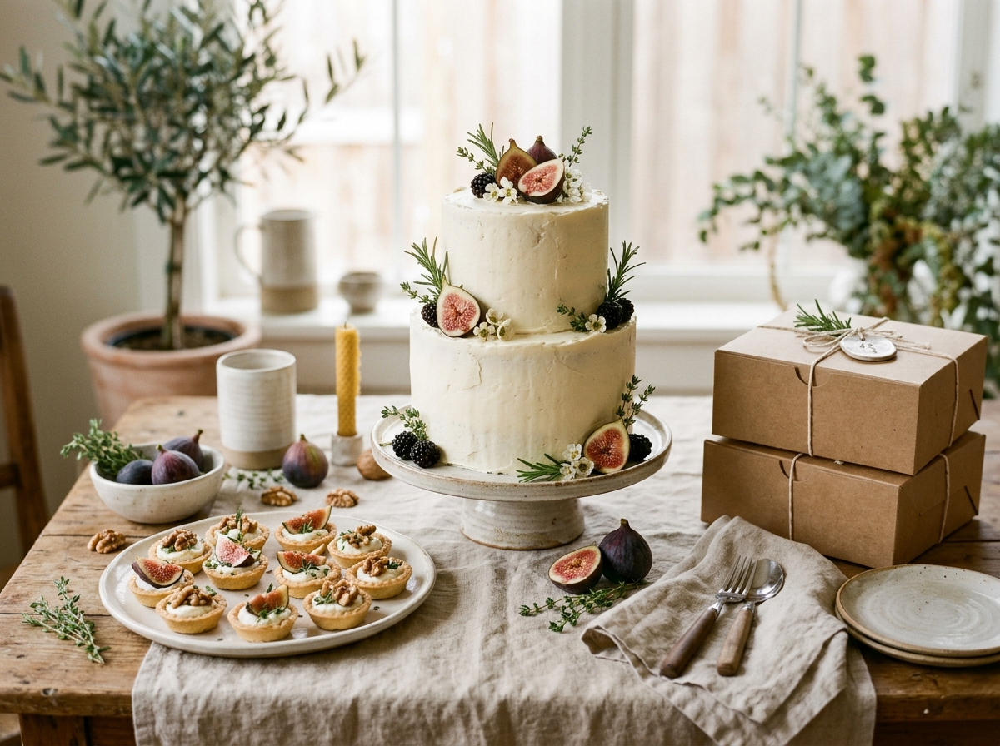
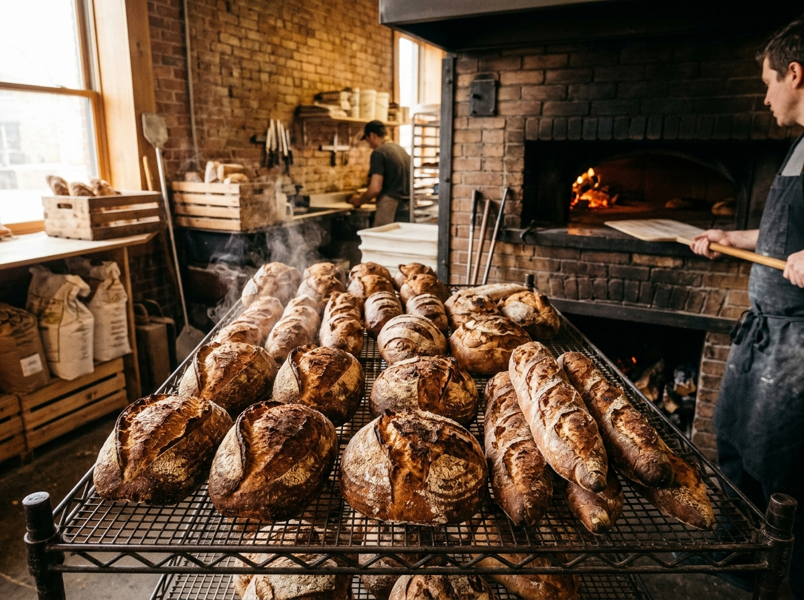
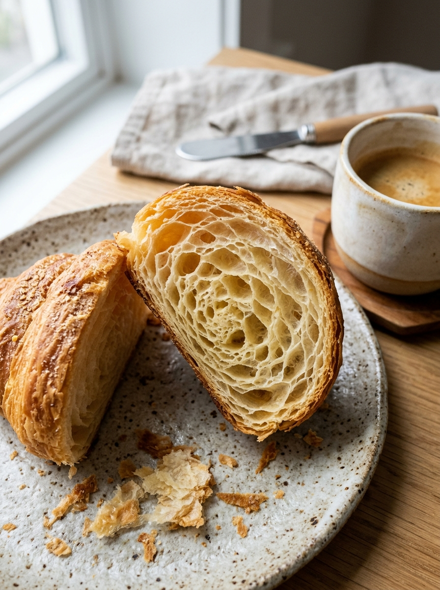
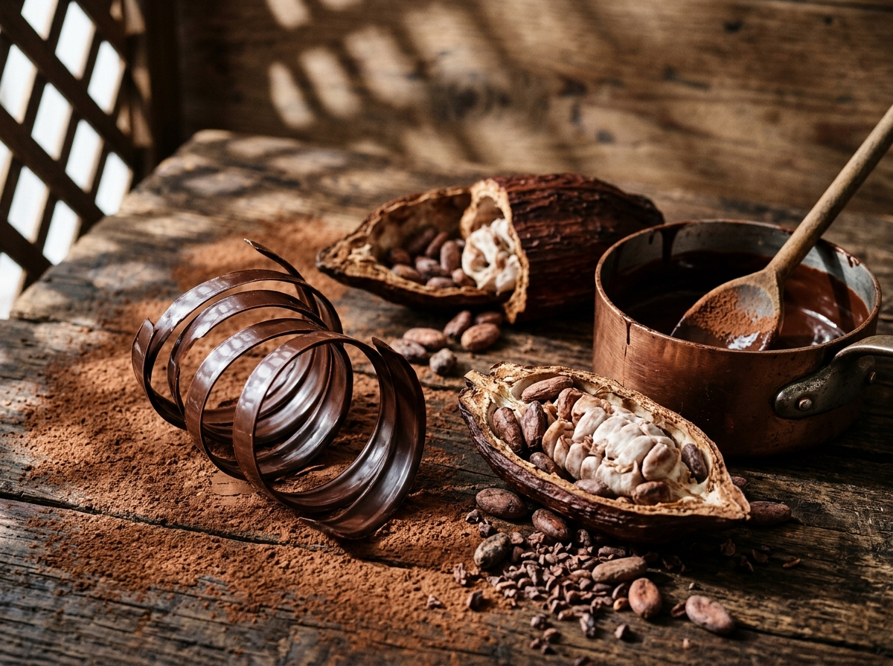
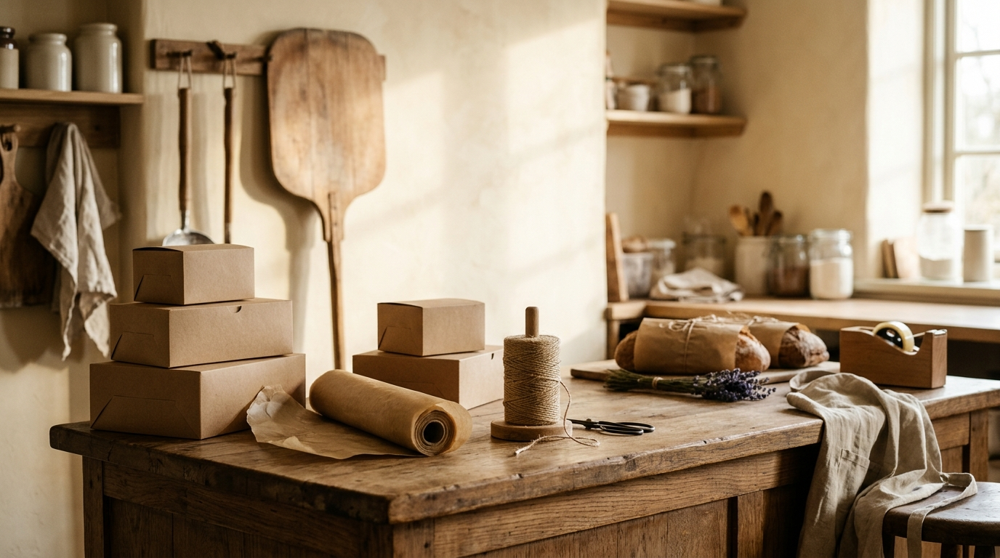

Masas reposadas de 24 horas
Hogazas de corteza crujiente y miga abierta presentadas con peso real en gramos y valor referencial claro.
Trigal Dorado es un obrador ficticio creado por AV·STUDIO para mostrar cómo una panadería y pastelería de autor presenta su vitrina diaria en USD, ediciones de temporada y cotizaciones por encargo sin fricciones.

Cada pieza responde a un balance simple de materia prima reconocible y cocciones cuidadas. Este sitio ejemplifica cómo organizar un catálogo de vitrina diaria junto con encargos programados con precios referenciales en dólares estadounidenses.
Hogazas de corteza crujiente y miga abierta presentadas con peso real en gramos y valor referencial claro.
Croissants, tartaletas sablé y hojaldres caramelizados mostrados con fotografía protagonista antes que cajas de texto repetitivas.
Opciones claras para 12, 20 o 35 porciones con consulta demostrativa directa hacia WhatsApp, sin pasarelas forzadas.
Precios y formatos de ejemplo. Abre la ficha rápida para consultar ingredientes y porciones, o traslada cualquier pieza al formulario de encargo.
6 productos en vitrina

Explora nuestras tres preparaciones protagonistas y revisa su ficha técnica de ejemplo antes de cotizar un tamaño o sabor similar.
Bizcocho húmedo de cacao ecuatoriano, crema diplomática de vainilla y moras frescas.
La textura de cada bizcocho, tartaleta y hogaza nace del trato directo de cuatro elementos esenciales sobre el mesón de trabajo.
Hidratación paciente y reposos largos para desarrollar cortezas doradas y migas tiernas sin aditivos decorativos.
Pliegues definidos para hojaldres crujientes y cremas ligeras de punto estable.
Notas tostadas profundas equilibradas con maracuyá, limón sutil, moras y frambuesas frescas.


Elige una escala tentativa de porciones para trasladarla al cotizador demostrativo. No se realizan cobros ni bloqueos automáticos de inventario en esta vista de ejemplo.
Torta mediana de un nivel o caja combinada de postres individuales.
Sabor a elección con dedicatoria breve o cobertura de frutos de temporada.
Pastel principal más surtido demostrativo de tartaletas y milhojas por caja.
Escenas únicas de cocción, alveolado de hojaldre, atemperado de chocolate y empaque en papel kraft.




Este formulario valida sabor, porciones y fecha requerida para preparar una consulta ordenada hacia WhatsApp de Anderson Vallejo (AV·STUDIO). Ninguna solicitud genera cobros ni reservas confirmadas reales.